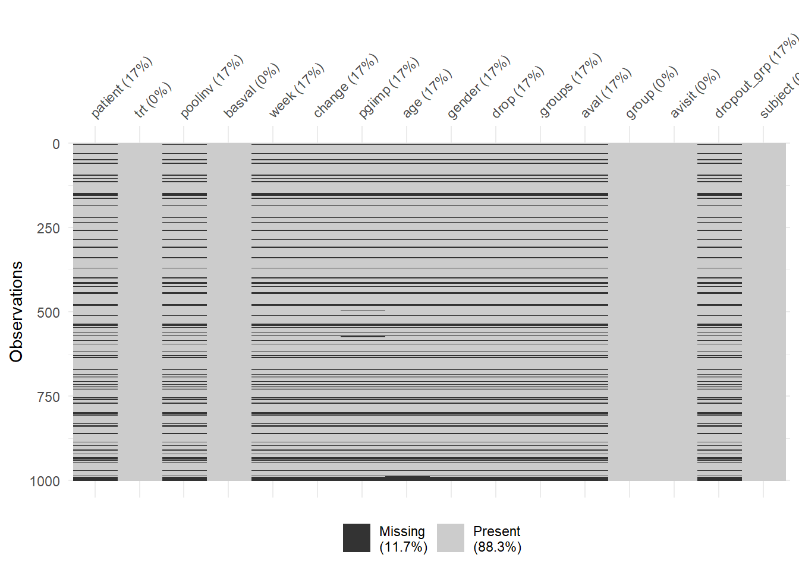
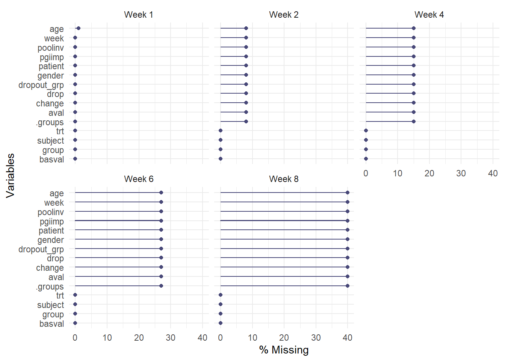
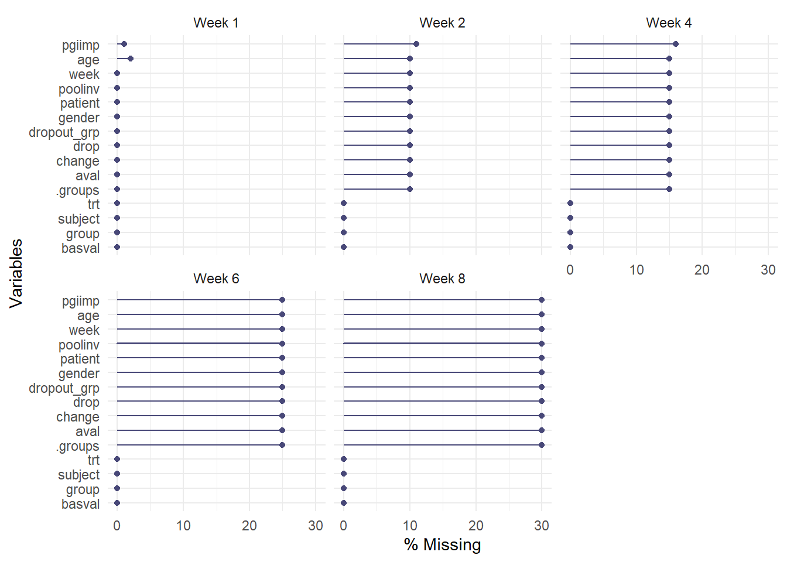

library(rbmi)
# ?rbmi
vignette(topic = "quickstart", package = "rbmi")starting httpd help server ... donePurpose: talk about sensitivity analyses with respect to missing data
Note that, when implemented in similar manners, MI and MMRM have similar assumptions and yield similar results. Thus, MI implemented similarly to MMRM is not a sensitivity analysis!
Now, we consider the situation as in our data sets: baseline observed, no intermittent missing values, drop-outs = monotone missing pattern
In general, these simple approaches are not recommended for use. Methods are of historic interest and provide a useful starting point. Here, we consider two simple approaches. We will apply these two methods in the practical part to compare results.
For each subject, LOCF imputes missing values using the last observed value for that subject. Typically, under LOCF the repeated masures nature of the data is ignored and a single outcome for each subject is analyzed.
LOCF was used in the past, justified as it was thought that it provides conservative estimates. However, conditions under which LOCF yield conservative estimates and maintain control of Type I error rates are not straightforward and cannot be assured at the beginning of the trial. For example, LOCF is likely to overestimate treatment benefit if dop-out in the control gorup is more frequent.
Other names: observed case/ completers analysis
Reduce the data set selecting only those subjects with observed outcome value(s).
Completers analysis may create selection bias, may cause overestimation of within group effects particularly at the last scheduled visit.
Jump to reference J2R assumes that after treatment discontinuation, the patient???s mean outcome distribution is that of a reference group, usually the control group. This is a very extreme assumption, as this implies that any efficacy of the drug vanishes immediately after discontinuation - may be plausible for symptomatic treatments.
Copy reference CR assumes that the patient???s outcome distribution both before and after treatment discontinuation is the same as the distribution of the reference group. This has a milder effect than J2R: If a treatment-group patient has an outcome that is better than the reference group mean before treatment discontinuation, their imputed values after treatment discontinuation will also be better than the reference group mean.
Copy increments in reference CIR assumes that after treatment discontinuation, the increments are the same as those from the reference group. This is much milder than J2R and CR and implies that benefit gained from the treatment before discontinuation is not lost.
The conventional approach to analyse data using these reference based approaches is MI, following the same steps as MI under MAR.
Software, R: e.g. the rbmi package supports reference-based strategies (Gower-Page and Wolbers 2022)
Have a short look at the rbmi() package first.
starting httpd help server ... doneThe workflow is based on 4 core functions:
Implemented imputation strategies in rbmi:
I will show how it looks like for the all2 data set and you will then explore the methods using the high2 data set.
Table: Adjusted means for the complete case data set (all2 data with drop-out, select completer)
trt avisit emmean SE df lower.CL upper.CL
1 Week 2 -4.33 1.12 34 -6.61 -2.06
2 Week 2 -5.47 1.09 34 -7.69 -3.26
1 Week 4 -6.98 1.09 34 -9.19 -4.77
2 Week 4 -9.12 1.06 34 -11.27 -6.97
1 Week 8 -10.17 1.21 34 -12.63 -7.71
2 Week 8 -13.10 1.18 34 -15.49 -10.71
Confidence level used: 0.95 Table: Adjusted means for the all2 data set with drop-out analysed with MMRM
trt avisit emmean SE df lower.CL upper.CL
1 Week 2 -4.10 0.900 47.0 -5.91 -2.29
2 Week 2 -5.29 0.899 47.0 -7.10 -3.48
1 Week 4 -6.42 0.974 46.5 -8.38 -4.46
2 Week 4 -8.52 0.951 44.8 -10.43 -6.60
1 Week 8 -9.73 1.142 40.4 -12.03 -7.42
2 Week 8 -12.62 1.114 40.1 -14.88 -10.37
Confidence level used: 0.95 all2.locf <- all2 %>% filter(!is.na(chgdrop)) %>%
dplyr::group_by(subject) %>%
dplyr::mutate( drop=max(week) )
all2.locf<-all2.locf %>% dplyr::filter(week==drop)
ancova <- aov(change ~ basval + trt, data = all2.locf)
summary(ancova) Df Sum Sq Mean Sq F value Pr(>F)
basval 1 1.8 1.82 0.053 0.8185
trt 1 114.2 114.20 3.342 0.0739 .
Residuals 47 1606.1 34.17
---
Signif. codes: 0 '***' 0.001 '**' 0.01 '*' 0.05 '.' 0.1 ' ' 1(Intercept) basval trt2
-8.69460273 0.02497994 -3.02800963 Table: Mean values for change from baseline of LOCF analysis
| Characteristic | Arm 1, N = 251 | Arm 2, N = 251 |
|---|---|---|
| change | -8.20 (5.50) | -11.24 (6.06) |
| 1 Mean (SD) | ||
# Define the names of key variables in the data set
set_mi<-set_vars(
subjid = "subject",
visit = "avisit",
outcome = "chgdrop",
group = "group",
covariates = c("basval * avisit", "group * avisit")
)
vars_an<-set_mi
vars_an$covariates <- "basval"
# Define the imputation strategy for each subject with at least one missing observation
dat_ice <- all2 %>%
arrange(subject, avisit) %>%
filter(is.na(chgdrop)) %>%
group_by(subject) %>%
slice(1) %>%
ungroup() %>%
select(subject, avisit) %>%
mutate(strategy = "JR")
# Define the imputation method
method <- method_bayes(
burn_in = 200,
burn_between = 5,
n_samples = 100,
seed = 072407
)
draw_all2<-draws(data=all2, data_ice = dat_ice, vars=set_mi, method=method, ncores = 1, quiet = FALSE)
imputeObj <- rbmi::impute(
draw_all2,
references = c("Arm 1" = "Arm 1", "Arm 2" = "Arm 1")
)
imputed_all2 <- extract_imputed_dfs(imputeObj)
anaObj <- analyse(
imputeObj,
vars = vars_an
)Table: Estimates from jump to reference J2R imputation
parameter est se lci uci pval
1 trt_Week 2 -1.189928 1.2864325 -3.780746 1.4008900 3.598958e-01
2 lsm_ref_Week 2 -4.125036 0.9088264 -5.955372 -2.2947002 4.178855e-05
3 lsm_alt_Week 2 -5.314964 0.9088264 -7.145300 -3.4846279 5.199440e-07
4 trt_Week 4 -1.891611 1.3620669 -4.640571 0.8573493 1.722385e-01
5 lsm_ref_Week 4 -6.431208 0.9825242 -8.416838 -4.4455792 8.018843e-08
6 lsm_alt_Week 4 -8.322819 0.9686135 -10.278514 -6.3671240 9.691334e-11
7 trt_Week 8 -2.224522 1.6819701 -5.630171 1.1811279 1.939313e-01
8 lsm_ref_Week 8 -9.635725 1.2325842 -12.138382 -7.1330688 3.578224e-09
9 lsm_alt_Week 8 -11.860247 1.1666594 -14.219452 -9.5010426 1.465037e-12Use the additional argument update_strategies in the impute function.
Table: Estimates from copy increments in reference CIR imputation
parameter est se lci uci pval
1 trt_Week 2 -1.189928 1.2864325 -3.780746 1.4008900 3.598958e-01
2 lsm_ref_Week 2 -4.125036 0.9088264 -5.955372 -2.2947002 4.178855e-05
3 lsm_alt_Week 2 -5.314964 0.9088264 -7.145300 -3.4846279 5.199440e-07
4 trt_Week 4 -2.014066 1.3705302 -4.780689 0.7525565 1.492051e-01
5 lsm_ref_Week 4 -6.421132 0.9876309 -8.417393 -4.4248703 9.451951e-08
6 lsm_alt_Week 4 -8.435198 0.9659215 -10.384762 -6.4856335 5.656836e-11
7 trt_Week 8 -2.623617 1.6330444 -5.927634 0.6803994 1.162804e-01
8 lsm_ref_Week 8 -9.638166 1.1777005 -12.024453 -7.2518789 8.026285e-10
9 lsm_alt_Week 8 -12.261783 1.1899788 -14.674825 -9.8487422 2.641684e-12Take the figure from the missingness part to better understand what we have found here.
| Mean | Diff | |
|---|---|---|
| Completers, Arm 1 | -10.17 | |
| Completers, Arm 2 | -13.10 | -2.93 |
| MMRM, Arm 1 | -9.73 | |
| MMRM, Arm 2 | -12.62 | -2.89 |
| LOCF, Arm 1 | -8.20 | |
| LOCF, Arm 2 | -11.24 | -3.03 |
| J2R , Arm 1 | -9.66 | |
| J2R , Arm 2 | -11.87 | -2.21 |
| CIR , Arm 1 | -9.65 | |
| CIR , Arm 2 | -12.26 | -2.61 |
Now, you can first of all repeat the analysis on the all2 data set to see if you can manage it. Or you go directly to the next step and apply methods to the high2 data set.
One starting point for the high2 data set as the structure is a little bit different:
First, fill in missing visits. This was not necessary in the all2 data set. This can be done with the expand_locf function of the rbmi package. Note, change is the outcome variable and not chgdrop as in all2
high2 <- high2 %>% ungroup()
high2_expand <- expand_locf(
high2,
subject = levels(high2$subject),
avisit = levels(high2$avisit),
vars = c("basval","trt","group"),
group = c("subject"),
order = c("subject", "avisit")
)
## Exploring missing data
vis_miss(high2_expand)


trt avisit emmean SE df lower.CL upper.CL
1 Week 1 -1.91 0.595 127 -3.08 -0.731
2 Week 1 -1.97 0.550 127 -3.06 -0.885
1 Week 2 -4.08 0.756 126 -5.58 -2.585
2 Week 2 -4.47 0.702 127 -5.86 -3.080
1 Week 4 -5.85 0.764 127 -7.36 -4.336
2 Week 4 -6.99 0.706 127 -8.38 -5.591
1 Week 6 -7.09 0.749 127 -8.57 -5.607
2 Week 6 -8.51 0.692 127 -9.88 -7.138
1 Week 8 -6.96 0.811 127 -8.56 -5.352
2 Week 8 -8.67 0.750 127 -10.16 -7.191
Confidence level used: 0.95 trt avisit emmean SE df lower.CL upper.CL
1 Week 1 -1.61 0.458 197 -2.52 -0.711
2 Week 1 -1.66 0.459 197 -2.56 -0.752
1 Week 2 -3.24 0.609 191 -4.44 -2.036
2 Week 2 -3.89 0.613 193 -5.10 -2.681
1 Week 4 -4.52 0.656 182 -5.81 -3.223
2 Week 4 -5.98 0.656 182 -7.27 -4.684
1 Week 6 -5.12 0.718 168 -6.53 -3.701
2 Week 6 -7.48 0.715 166 -8.89 -6.067
1 Week 8 -5.24 0.785 149 -6.79 -3.686
2 Week 8 -7.76 0.762 139 -9.26 -6.251
Confidence level used: 0.95 high2_expand.locf <- high2_expand %>% filter(!is.na(change)) %>%
dplyr::group_by(subject) %>%
dplyr::mutate( drop=max(week) )
high2_expand.locf<-high2_expand.locf %>% dplyr::filter(week==drop)
ancova <- aov(change ~ basval + trt, data = high2_expand.locf)
summary(ancova) Df Sum Sq Mean Sq F value Pr(>F)
basval 1 483 483.3 9.709 0.00211 **
trt 1 241 241.4 4.851 0.02880 *
Residuals 197 9805 49.8
---
Signif. codes: 0 '***' 0.001 '**' 0.01 '*' 0.05 '.' 0.1 ' ' 1(Intercept) basval trt2
0.3536399 -0.2648315 -2.2086854 Table: Mean values for change from baseline of LOCF analysis
| Characteristic | Arm 1, N = 1001 | Arm 2, N = 1001 |
|---|---|---|
| change | -4.22 (6.38) | -6.72 (7.90) |
| 1 Mean (SD) | ||
# Define the names of key variables in the data set
set_mi<-set_vars(
subjid = "subject",
visit = "avisit",
outcome = "change",
group = "group",
covariates = c("basval * avisit", "group * avisit")
)
vars_an<-set_mi
vars_an$covariates <- "basval"
# Define the imputation strategy for each subject with at least one missing observation
dat_ice <- high2_expand %>%
arrange(subject, avisit) %>%
filter(is.na(change)) %>%
group_by(subject) %>%
slice(1) %>%
ungroup() %>%
select(subject, avisit) %>%
mutate(strategy = "JR")
# Define the imputation method
method <- method_bayes(
burn_in = 200,
burn_between = 5,
n_samples = 100,
seed = 072407
)
draw_high2_expand<-draws(data=high2_expand, data_ice = dat_ice, vars=set_mi, method=method, ncores = 1, quiet = FALSE)
imputeObj <- rbmi::impute(
draw_high2_expand,
references = c("Arm 1" = "Arm 1", "Arm 2" = "Arm 1")
)
imputed_high2_expand <- extract_imputed_dfs(imputeObj)
anaObj <- analyse(
imputeObj,
vars = vars_an
)Table: Estimates from jump to reference J2R imputation
parameter est se lci uci pval
1 trt_Week 1 -0.04272539 0.6513099 -1.327240 1.2417894 9.477641e-01
2 lsm_ref_Week 1 -1.64363730 0.4593710 -2.549610 -0.7376649 4.367614e-04
3 lsm_alt_Week 1 -1.68636270 0.4593710 -2.592335 -0.7803903 3.118171e-04
4 trt_Week 2 -0.56992013 0.8733074 -2.293096 1.1532554 5.148426e-01
5 lsm_ref_Week 2 -3.31268012 0.6131345 -4.522404 -2.1029566 2.023442e-07
6 lsm_alt_Week 2 -3.88260025 0.6200592 -5.106212 -2.6589881 2.772190e-09
7 trt_Week 4 -1.24725634 0.9408037 -3.104301 0.6097887 1.866906e-01
8 lsm_ref_Week 4 -4.55155161 0.6629053 -5.860032 -3.2430717 1.152780e-10
9 lsm_alt_Week 4 -5.79880795 0.6663404 -7.114195 -4.4834207 2.753285e-15
10 trt_Week 6 -1.70672432 1.0335987 -3.747568 0.3341192 1.005981e-01
11 lsm_ref_Week 6 -5.19235287 0.7271162 -6.627972 -3.7567339 2.786779e-11
12 lsm_alt_Week 6 -6.89907719 0.7562247 -8.393431 -5.4047230 4.832113e-16
13 trt_Week 8 -1.72142767 1.1185316 -3.931215 0.4883593 1.258714e-01
14 lsm_ref_Week 8 -5.30861260 0.8134583 -6.916855 -3.7003698 1.147909e-09
15 lsm_alt_Week 8 -7.03004027 0.8171570 -8.645779 -5.4143020 1.519834e-14Table: Estimates from copy increments in reference CR imputation
parameter est se lci uci pval
1 trt_Week 1 -0.04272539 0.6513099 -1.327240 1.2417894 9.477641e-01
2 lsm_ref_Week 1 -1.64363730 0.4593710 -2.549610 -0.7376649 4.367614e-04
3 lsm_alt_Week 1 -1.68636270 0.4593710 -2.592335 -0.7803903 3.118171e-04
4 trt_Week 2 -0.56759918 0.8689359 -2.282001 1.1468026 5.144382e-01
5 lsm_ref_Week 2 -3.29268009 0.6124023 -4.500929 -2.0844308 2.286124e-07
6 lsm_alt_Week 2 -3.86027926 0.6116150 -5.066951 -2.6536076 2.006222e-09
7 trt_Week 4 -1.25504934 0.9383983 -3.107106 0.5970075 1.828184e-01
8 lsm_ref_Week 4 -4.53971218 0.6596020 -5.841448 -3.2379761 9.920190e-11
9 lsm_alt_Week 4 -5.79476153 0.6613572 -7.100023 -4.4895005 1.620378e-15
10 trt_Week 6 -1.84350067 1.0284066 -3.874288 0.1872865 7.490327e-02
11 lsm_ref_Week 6 -5.19290296 0.7322118 -6.639082 -3.7467244 4.162868e-11
12 lsm_alt_Week 6 -7.03640363 0.7325057 -8.483175 -5.5896322 1.716342e-17
13 trt_Week 8 -1.89556177 1.1140972 -4.097188 0.3060646 9.096551e-02
14 lsm_ref_Week 8 -5.34060252 0.8285363 -6.980116 -3.7010886 2.174328e-09
15 lsm_alt_Week 8 -7.23616429 0.7883131 -8.794109 -5.6782193 3.806874e-16Use the additional argument update_strategies in the impute function.
Table: Estimates from copy increments in reference CIR imputation
parameter est se lci uci pval
1 trt_Week 1 -0.04272539 0.6513099 -1.327240 1.24178939 9.477641e-01
2 lsm_ref_Week 1 -1.64363730 0.4593710 -2.549610 -0.73766488 4.367614e-04
3 lsm_alt_Week 1 -1.68636270 0.4593710 -2.592335 -0.78039028 3.118171e-04
4 trt_Week 2 -0.59370495 0.8652051 -2.300688 1.11327818 4.934487e-01
5 lsm_ref_Week 2 -3.31016751 0.6107925 -4.515231 -2.10510358 1.858699e-07
6 lsm_alt_Week 2 -3.90387245 0.6131567 -5.113675 -2.69407009 1.525078e-09
7 trt_Week 4 -1.30521947 0.9399264 -3.160483 0.55004438 1.667362e-01
8 lsm_ref_Week 4 -4.54415889 0.6612575 -5.849315 -3.23900302 1.094861e-10
9 lsm_alt_Week 4 -5.84937837 0.6646077 -7.161268 -4.53748825 1.440661e-15
10 trt_Week 6 -1.95953532 1.0158040 -3.965042 0.04597113 5.542434e-02
11 lsm_ref_Week 6 -5.17405265 0.7257053 -6.607187 -3.74091840 3.216919e-11
12 lsm_alt_Week 6 -7.13358797 0.7274177 -8.570175 -5.69700135 4.541636e-18
13 trt_Week 8 -2.06003358 1.1160556 -4.265940 0.14587245 6.696562e-02
14 lsm_ref_Week 8 -5.30927178 0.8206544 -6.933036 -3.68550713 1.886190e-09
15 lsm_alt_Week 8 -7.36930536 0.7879631 -8.926768 -5.81184259 1.535541e-16Take the figure from the missingness part to better understand what we have found here.
| Group | Mean | Diff |
|---|---|---|
| Completers, Arm 1 | -6.96 | |
| Completers, Arm 2 | -8.67 | -1.71 |
| MMRM, Arm 1 | -5.24 | |
| MMRM, Arm 2 | -7.76 | -2.52 |
| LOCF, Arm 1 | -4.22 | |
| LOCF, Arm 2 | -6.72 | -2.50 |
| J2R, Arm 1 | -5.31 | |
| J2R, Arm 2 | -7.03 | -1.72 |
| CR, Arm 1 | -5.34 | |
| CR, Arm 2 | -7.24 | -1.90 |
| CIR, Arm 1 | -5.31 | |
| CIR, Arm 2 | -7.37 | -2.06 |